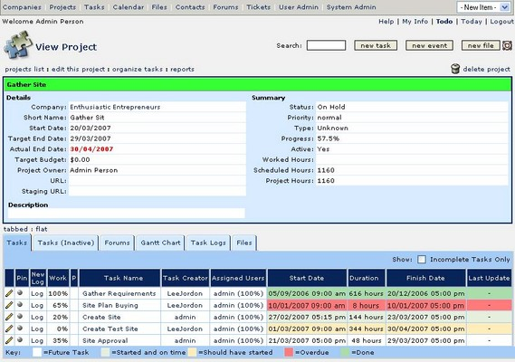
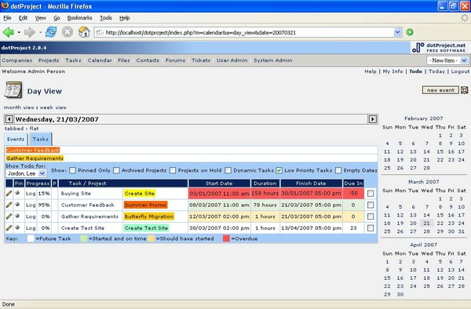
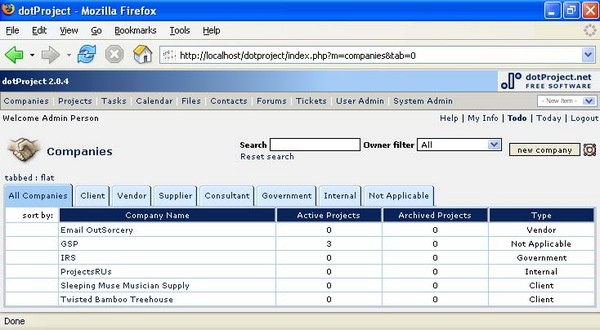
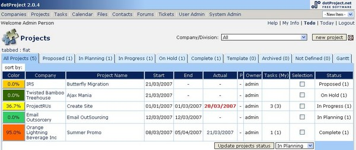

dotProject
By Lee Jordan
What is dotProject?
dotProject enables you to create, track, and maintain your projects online. It provides enterprise-level project management tools that include contact management, an email notification system, and an online system to create and manage projects. The intuitive color codes indicate if you are headed for hot water. It is created, maintained, and developed by volunteers like you and me.
dotProject is free to use. The software license is BSD, GNU General Public License (GPL), which means it is free software provided as is with no warranty. The full license should be available in the [filename path] where your installation of dotProject resides. You can learn more about this type of license at http://www.gnu.org/licenses/gpl.html.
When a user first logs in, they will see a personalized view of dotProject. The screen will display the events and tasks they are members of, including a full list of specific projects and tasks they are assigned to. The user can navigate to different areas as specified on the navigation bar, which will be displayed on the top or the left side of the screen.

dotProject is an online project management application. You will need a browser and either intranet or Internet access. dotProject is surprisingly versatile. A few of the many things you can do in dotProject are:
- Set up a project and its tasks
- Communicate with everyone on the project team from within dotProject.
- See projects as Gantt charts
- Check task progress quickly with Calendar and Events
dotProject has great features for communicating with your contacts and resources. Even so, it is not intended as a groupware tool. Groupware is generally used to describe desktop or web-based applications that enable users to work collaboratively. There are often forum, chat environments, wikis, or email tools which are all-purpose in nature. Choosing a groupware over a focused application could be compared to offering a guest a wide variety of pies, cakes, and cookies for dessert when you know they have a deep and abiding love for cheesecake with raspberry and chocolate sauce.
dotProject is focused specifically on project management instead of being a generic groupware application. It does contain forums, calendar, and email functionality that are often associated with groupware tools, so that users can collaborate for the purpose of project management. The phrase, "for the purpose of project management" is the key difference between dotProject and groupware. The narrow focus on the needs of those involved in managing projects makes dotProject more useful to users than a generic tool. No project is too large or too small, whether you are trying to get the band back together or developing enterprise software projects.
dotProject is useful in many ways. There are features of dotProject that make using it a much more pleasant experience like user specific to-do lists and events: when a user logs in, they immediately see what project events they are involved in and what tasks are assigned to them.
What are the Core Features of dotProject?
The answer will actually depend on what your company uses dotProject for. A user with admin access has a great deal of control over what modules are active, displayed, or hidden, and who can use them. If a particular set of modules are not needed, they can be deactivated. There are 10 key features that make up the core of dotProject. These are central to the dotProject philosophy of creating an environment for users:
- User Management
- Email-based Trouble Ticket System (dotProject incorporates voxel dot net's Ticketsmith system
- Client/Company Management
- Project Listings
- Hierarchical Task List
- File Repository
- Contact List
- Calendar
- Discussion Forum
- Resource Based Permissions
Core Features in Detail
User Management: A simple feature, for tracking user activity, adding users, and managing users. User sessions showing date last logged in as well as other information is available.
Email based Trouble Ticket System (Integrated voxel dot net's Ticketsmith): A ticket tracking system. Some use dotProject as a helpdesk or combination CRM (Customer Resource Management) tool.
Email notification for assignees: This feature is on by default whenever a new task is created. User assignees will receive information about the task they were assigned to unless you choose not to have the notification sent.
Client/Company Management: A digital rolodex of contact information that can be used to identify projects that directly affect customers or external clients. Basic default classifications and categories are already set up in the Companies module. A tabbed interface allows users to quickly see how many vendors, suppliers, and other types of companies are on the list.

Project listings: Lists of projects are broken down by what state they are in, such as all projects, proposed, planning, in progress, on hold, complete, template, archived, not defined. You can quickly move from tab to tab to view the state of the projects. The number of projects listed in each state is in parenthesis on each tab.

Layered project and task details: The minimum amount you need to know is displayed. Text links allow the user to drill down into the project or task for more information if required. Tasks can also be organized by precedence, dependencies, and time.
Hierarchical Task List: Tasks are organized in a hierarchy, not just arbitrarily listed. This is a very useful feature. Tasks can be dependent on other tasks.
Instant Color Coded Progress: Instantly see if your project is in danger with intuitive color codes. If your task is highlighted with dark pink or red, it is past due.

File Repository: The file repository is a central place to store project documents. They can be viewed from the central repository or from the project they are stored under. Files can be uploaded without being associated with a specific project. They will appear under the All Projects heading in the repository. I have found this feature invaluable for when I wanted to make sure all stakeholders would be able to view key files or code in case something happened. The file system strictly controls how files are downloaded and uploaded. All files can be assigned a version number. The check-in and check-out process can be confusing. We will spend some quality time covering it in Chapter 3, where I will help you avoid the embarrassing mistakes I have made using this feature.
Contact List: The contact list can be used intuitively within project listings themselves. This is a feature I am thankful for every time I have to edit or create a new task.
Calendar: The calendar has several display options, including a three month mini calendar view, a day view, week view, and a comprehensive month view. A full screen version of the calendar is only a click away on the navigation bar. There you can see a holistic view of all the projects and tasks. There is also a three month mini-calendar that displays on the Today screen.
Discussion Forum: The forum module can be used to share project-specific news and information. It is integrated into dotProject. Everyone can view what is said in the forum. Threaded discussion forums can be created to discuss particular projects. All forums must be associated with projects. Forums can be moderated, and follow a standard post topic, reply, add new topic format.
Resource Based Permissions: The permissions system in versions 2.0 and above is role based. It is granular, meaning there are many variations that can be used to specify access to the areas you want and prevent access. Users can have read-only access to certain modules by role. Role-based permissions are intuitive. If most of the people using dotProject will be project managers, a project manager role can be created, and then individual users can be added to the system. Roles must be in place before a user is added. Think of it as a job. A job must be created, and then a person hired to fill the job position. This is a very important feature.
User specific to-do lists and events: When a user logs in, they immediately see what project events they are involved in and what tasks are assigned to them.
Why dotProject is the Right PMA for You
So far we have examined what project management applications are, what they should do, and taken a high level look at what features dotProject has to offer. Determining what project management tool best suits an organization calls for awareness of which features are critical and which are negotiable.
dotProject is the right choice for organizations that need a project management application that has no fees, has a generous license agreement, is stable, works on all the major browsers, has a supportive community, has permissions that are granular, and is scalable. It is open source, not a commercial application. There are no license fees, maintenance fees, or purchasing fees. For organizations on a tight budget, the price is right.
It has a history of integration with other popular open-source projects such as PostNuke. It's modular. Use only the modules you need. Don't want to use the Forums module? Disable it. It shares many advantages of other open-source, developer maintained applications in that, it is relatively lightweight, can be customized by users or by contracting with its developers.
dotProject does have limitations. Its focused approach may turn off those looking for an all-in-one project development suite. There is no module for creating diagrams, for example. The ability of dotProject to integrate with other applications as part of a larger, customized group is a potential solution.
Unsure if you want to install or use dotProject? Try out the free demo on
the main dotProject site:
http://www.dotproject.net/demo/
This article is excerpted from Project Management with dotProject: Implement, Configure, Customize, and Maintain your DotProject Installation by Lee Jordan, published by Packt Publishing. For further details, please visit http://www.packtpub.com/dotProject/book.
Talkback: Discuss this article with The Answer Gang
Lee Jordan is a web developer with a large collection of web technology acronyms on her resume that sound like the names of laundry detergents and cause glazed expressions in school children. She designs and maintains internal and external enterprise-level websites and web-based applications as part of a project team for a privately held technical services company. Her work includes proposing, writing, and editing web content and user guides people actually read. She began her career in 1997 as a web designer after graduating from Florida State University with a Bachelor of Fine Arts, where she swears that she missed at least one home football game while in the computer lab. Lee later convinced Seminole Community College to give her a Web Programming degree in 2003, even though her final project was a Java-based application that actually contained a usable help file. Web development topics or whatever she can think of at the time are posted on her blog at http://leesjordan.net.